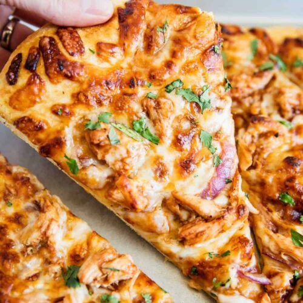

Country Sweet BBQ Chicken Pizza

Country Sweet BBQ Chicken Pizza
Dough Ingredients
- 3 cups flour
- 2 teaspoons actuve ddry yeast
- 1 teaspoon salt
- 1 cup water
- 1 teaspoon cornmeal
Topping Ingredients
- 1 grilled chicken breast (cut into bite size pieces)
- 1/4 cup diced red onion
- 1/2 cup shredded cheddar cheese
- 1.5 tablespoon Kerrygold butter
- 1 teaspoon garlic powder
- 1 teaspoon coarse seasalt
- 1/3 cup Country Sweet BBQ Sauce
Dough Steps
- Add water, flour, salt, and yeast to breadmaker pan
- Set breadmaker to dough setting (1.5 hours)
- Remove dough from bread pan.
- form dough into pizza shape. (add flour as necessary to prvent sticking)
- Sprinkle cornmeal on to pizza peel evenly
- Turn dough out on to pizza peel and verify the dough does not stick.
Topping Steps
- Melt butter, brush butter on edge of dough
- Sprinkle garlic poweder and seasalt on edge of dough over butter
- Spread BBQ Sauce evenly on dough
- Spread chicken pieces and red onion evenly on pizza
- Spread cheese over toppings
Cooking Steps
- Preheat overn to 550
- Slide pizza on to heated pizza stone
- Bake for approximately 10 minutes or until cheese has started to brown
- Stuff in to face hole